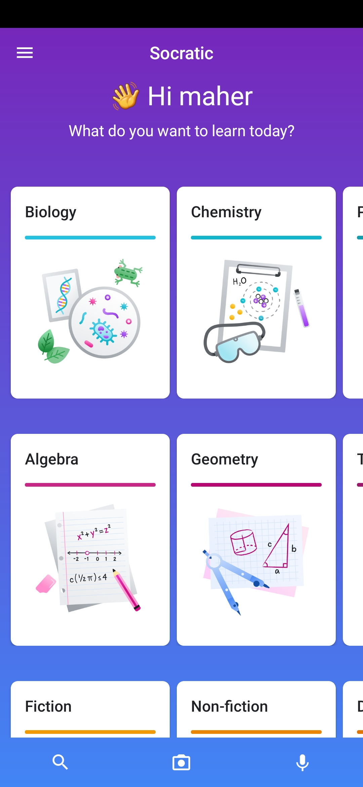

Tired of online learning?
Distance learning, or online learning has been a
round for a while, and many students faced new challenges that were'nt
there before, like diffuculty in learning online because of poor
internet connections, or you may have a teacher or instructer who
themselves not knowing how to full engage with sudents online, or
maybe the education system for the school university for managing
online learning is poor.
You may have a question that you don't fully understand, and need the
solution or answer for instantly, and sometimes you
may need explanation for the question too espacially when you are
studying from home and need help when you really can't go outside to
get help.
Well don't worry that much now about all these problems now, i will be
showing you a simple and easy method on how to get
instant explanations and solutions for free and
easily and simple.
Below i will be talking about an app you can download on your smart
phone, iOS or android
So how do i get all of this?
So you found this blog after searching on google for a solid 10
minutes(maybe?), searching for a working method that is simple and
easy to access and use everytime, and most importantly, its
FREE, who doesn't like free stuff, i will be showing
you the method right now.
The app used to do all this is called
Socratic by Google, its an app that google bought and is currently working on, it's the
app that does all the things mentioned earlier, from finding detailed
explanations for the questions topic on websites or on youtube, to
finding answers and solutions for your questions, there are benifits
to this app that not all apps that are for the same purpose have, they
are the following:
Easy to use
The most important thing for an app to have is the easability to use so you can use it struggle free, Socratic is very easy to use, it doens't require a tech genius to navigate and use, it has a clear UI, so that everyone can pickup and start using it to find what they need with no hastle.
Works for all subjects
Socratic is universal, it works for all the subjects you could image,
from Science, Math, Literature, Social Studies, Physics, and so much
more!
So you won't have to download multiple apps, each app works for a
different subject, no, socratic is universal and works for every thing
you need, so you will get detailed explanations wether its Calculus or
wether its Literature.
Powered by Google AI
Google AI is very powerful for finding solutions and
explanations online, usign text and speech recognition, Socratic
doesn't miss a spot when searching for what you need, so you just have
to take a picture of your problem and,
socratic will do its
thing in finding your needs.
Here are the steps of getting the socratic app:
Step 1:
Download the Socratic app for iOS or android, depending on the device you have:
step 2:
After downloading the Socratic app, open the app and you should see the following:
This is the first screen you will see when you open Socratic, it will show you a camera view of your device.
Step 3:
Take a picture of your qustion and select it like the following:
After doing selecting the question you need the solution and explanation for, click the Gobutton to search for your question, then you should see your answer similar to the image below:
As you can see you get the answer and if you click on it, it takes you the website that the question is already there with the full solution of it.
If you scroll to the bottom (not when you click on the answer before, that, right wehn you get the results) you will find explanations for your questions, simillar to the image below:
As you can see this is the explanation for the question, if you scroll down even more you will find youtube videos that explain the topic of the question, but i will leave that for you to discover yourself.
If you go back to the main screen, and without taking a picture, scroll down and you will be able to manually search for an educational topic you need help with:

You can select through any topic you want and get instant help for it.
Conclusion
These were all the steps needed to find answers, solutions and explanations for questions you have, if you have any questions or faced any problems you can email me your question or problem at: toolsx.app@gmail.com